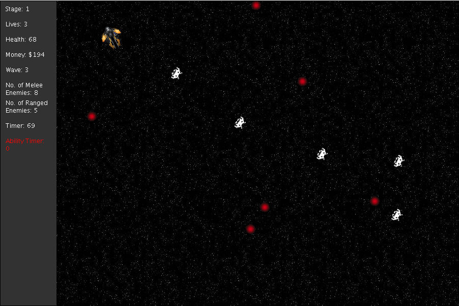
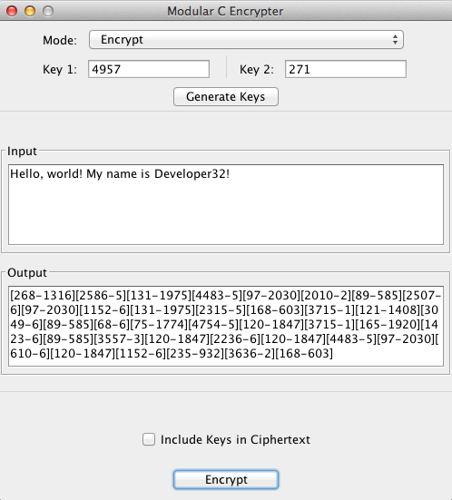
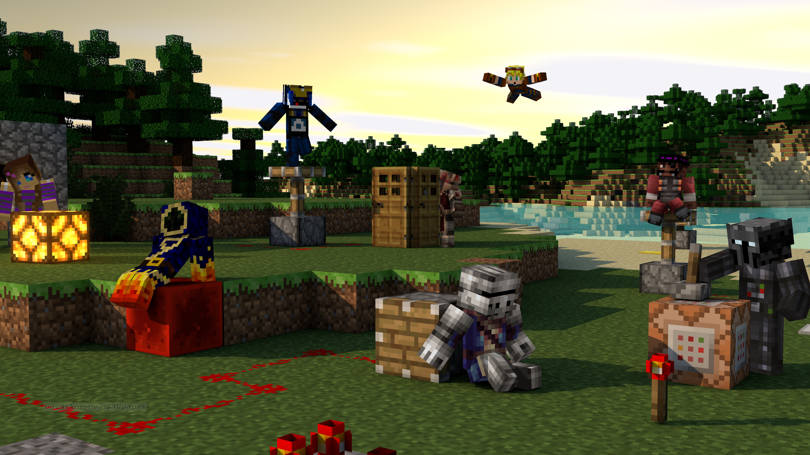

About Developer32
Programming
I like to program. I learnt my first languange, C++, when I was 11. Other than C++, I know other programming languages such as C, Objective-C, Python, and Java. The language I know best is Java. I used it to make some really cool projects, such as SpaceGame (a game, obviously, shown below) and ModularC (an encryption software).
Cryptography
I love to make people confused. Therefore I like cryptography. I started learning how to make codes when I was 12, with a lot of help and inspiration from "The Code Book" by Simon Singh. My first code was a monoalphabetic cipher called Mono-Alpha, which is used to encipher the English alphabet. I made this with a friend of mine, TheGreatOP. I also made a numerical counterpart of this, Mono-Beta. More advanced ciphers that I have made include Modular-A, Modular-B, and Modular-C (shown below).
Physics and Mathematics
I started learning Physics in the summer of 2013. I learnt about many aspects of Physics since then, including Kinematics, Dynamics, Thermodynamics, Particle Physics, Quantum Mechanics, Lagrangian Mechanics, etc. I expect myself to learn more about Physics in the future. I also quite like Mathematics, as everything is so straightforward. I can't say much else about my Mathematical knowledge though.

Minecraft
Minecraft is my favorite game of all time. I started playing in late 2011, when Minecraft 1.0 first came about. I enjoy building and creating architectural designs, making redstone contraptions, map making, and PVP. I'm part of a map making team called MatrixMechanics. We make cool PVP maps. I also play on the Overcast Network a lot. The image shown below is Matrix, a PVP team that I am part of.
